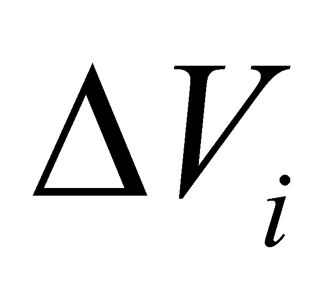
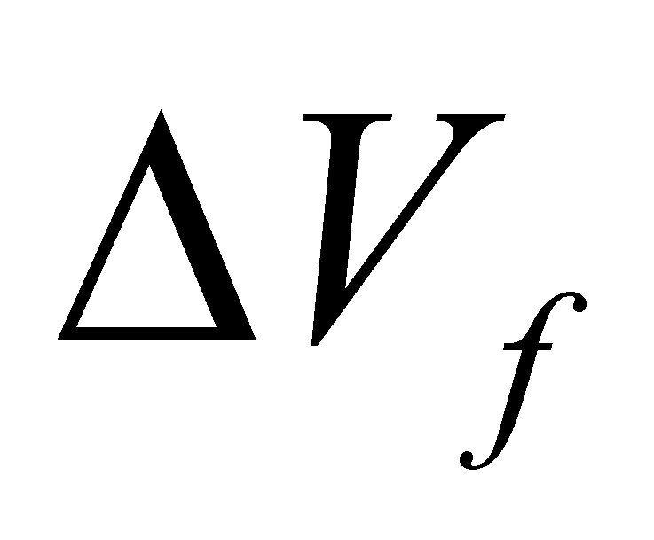
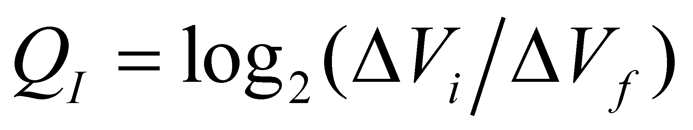
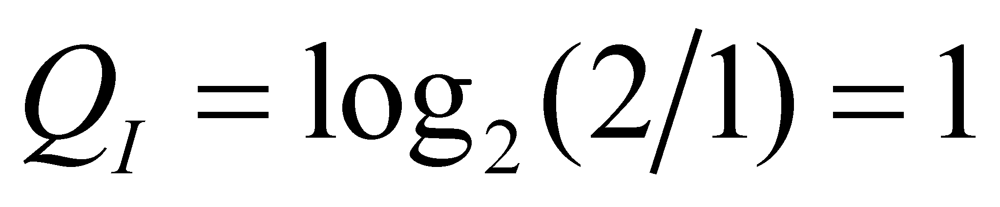

|
|
|
In case of an attribute belonging to a real object, with a limited range of values of its existential attribute, an experiment is possible to be performed at a certain moment which would result in the determination of the attribute value, more precisely, out of the finite set of values, one is selected as a real value (the so-called realized value which is obviously valid at the moment of determination).
Comment 9.6.1: The attribute’s quantitative value must be understood under the meaning of the present paper, in other words, as a finite difference against an invariant benchmark (reference), value which is permanently associated to a non-determination interval (in this case, as we will see next, this interval is VR). This is an essential specification because according to the objectual philosophy and as we have pointed out so far, there are two types of numerical values: absolute accurate values (AAV) with a null non-determination interval, therefore, they contain an infinite information amount (both material and abstract unachievable) and normal values, made-up from a relative accurate value (RAV) which is associated to a non-determination interval (truncation, approximation). The AAV, virtual objects, are the ones which form the axis of the real numbers from the mathematics.
Let us admit that before the experiment initiation, our knowledge regarding the attribute value was zero, and after the experiment completion, it is different from zero. By also assuming that the number of possible values (equiprobable as well) of the domain is a finite one, and they were all not achieved before the experiment, the non-determination is therefore total and the information is null. As their name suggests, the non-determination and determination are complementary (having the absolute reality as a basis of complementariness).
The total non-determination which is related to the null information, is the absolute reference against which the cognition (information amount) acquired by means of the experiment may be determined. The information amount (the information’s existential attribute) obtained as a result of an experiment, through which an initial domain of possible values  is reduced at a smaller final domain , it is given by the following relation:
 (9.6.1)
and the measuring unit of this attribute is the information amount which is obtained as a result of the determination (also, through an experiment) on the realization of an event from two equiprobables (restrain of the values domain at half from the initial value). For such case, the relation 9.6.1 provides:
 [bit] (9.6.2)
Comment 9.6.2: Most of the bio-systems which own a visual perception system have two exemplars belonging to this system type (the eyes) which are symmetrically placed against a vertical plane which runs through the antero-posterior axis (one of the elements of the internal reference system), plane which divides the whole visible space in two semi infinite spaces (left and right). If the bio-system is able to perceive an object, its first location is established in one of these semi infinite spaces, fact which provides to the bio-system’s IPS one information bit and then, the location into up-down and front-back semi infinite spaces, which adds two more bits. The rest of the determination process of the object’s position (rest of the information bits) is now provided by the animal eye which is able of a more accurate separation of the object’s position, which this time is against the eye’s internal reference system. This internal reference system of the visual organ is also based on a splitting of the sensitive elements area in two domains (left-right and up-down but against the eye’s internal reference system), splitting which allows the differential control of the muscles of the eye, head and even of the animal torso for watching the movements of the monitored objects. Other additional information concerning the position of an external object is provided by the other sense organs of the animal IPS (the proprioceptive, auditory, olfactory system etc.).
As we have previously mentioned, the information amount is the existential attribute of the abstract object - information. The information is an abstract object with a high abstraction level, and according to the classic philosophical terminology, it belongs to the class of categories (although it has a higher abstraction level as compared to any of them). This extremely high abstraction level makes that the information definition by means of the classic method (proximate kind + specific difference) to not be used, the information lacking a proximate kind (the proximate kind is an abstract object with an abstraction level higher or lower than the defined object).
However, the objectual philosophy makes some specifications on this notion:
If each material system is an existence form of the matter, all these forms (material objects) having the same generic model (fluxes triad model), we may state that each abstract system is a form of the information existence, which is also related to a generic model (the generic object model which reflects the total amount of properties associated to an ISS by an IPS).
If the total amount of MS and processes in which they are involved makes-up the real world (reality, material world), the total amount of abstract systems forms the abstract world (valid only for the IPS class, with sizes which depend on their performance level).
If the real world has an existence which is independent from the IPS existence, and it is unique, the abstract world is strictly connected to a specific IPS and through the internal ISS, each IPS has its own representation of the real world which is able to perceive it (image of the accessible known reality). An IPS is able to perceive few from the attributes of an external object (external for IPS). The total amount of these properties, each of them with a non-zero existential attribute which are perceived in parallel (therefore, simultaneously) on a single temporal DP, makes-up the information associated (by IPS) to that particular object, at that temporal DP. Thus, the abstract object named state of an object is nothing else but this information associated by IPS to a perceivable object. The information amount which is contained in each perceivable attribute is as high as its value has a less non-determination degree (as long as this value is more invariant, more accurate).
Non-determination of an amount from a specific interval also means that that value is variable inside the interval, either by means of known or unknown variation laws, but if there are invariant attributes distributed on that interval, these attributes represent an information which is associated to the variation (to the process)83. The information is provided to IPS at the moment when an experiment which allows the evaluation of the attribute’s value, with a non-determination less than the one prior to the experiment unfolding. We are noticing that the probability and the probabilities calculus do not provide to IPS a larger information amount than the one which is used as a base for the probabilities calculus, because this calculus does not restrain the non-determination. The increase of the information amount stored into IPS memory is mostly achieved as a result of an experiment (the realization of the probable event).
Comment 9.6.3: There is another way for the growth of the information amount contained into the memory of an IPS, that is the determination of some invariant relations between the experimental data (so-called invariant laws between the values of the attributes which belong to the real objects). We have seen that these invariant relations (the classic continuous functions) include (if they are true as well) a quasi-infinite amount of information, being devoted on the substitution of a very large number of individual assignment relations. However, these laws can be reached only as a result of a previous existence (and processing) of a large amount of experimental data (concrete values of the attributes which will form the support of the future law).
The existence of some restrictions (limitations, constraints) on the value of an amount is equivalent with the existence of some attributes determinism (cognition, invariance, domain limitation) – of having the values within a specific range. By contrast, the permission, freedom correspond to the non-determination which means zero information in case it is total.
Comment 9.6.4: In case of S-type distributed MS which enforce restrictions to their elements both as regards the translation and rotation, the invariant mean values of the elements position represent an internal information, whereas the vibration of elements (both of the translation and rotation ones) represents the non-determination domain of these positions.
83 As we have pointed out many times within the paper herein, if the spatial position of a body is variable, an information about this attribute cannot exist (because it is not invariant), but if the variation rate is invariant (even temporal distribution on the temporal support attribute), then, this rate (as a density of the temporal distribution) represents an information.
Copyright © 2006-2011 Aurel Rusu. All rights reserved.